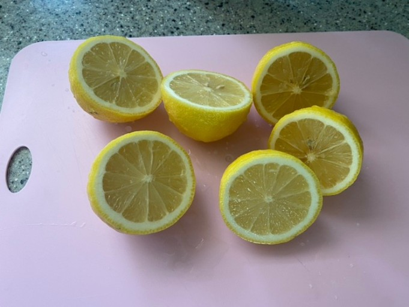

<h1>건강한 레몬</h1><br>
레몬은 90%가 수분으로 이루어져 있으며 100g당 30kcal이다.
<strong>비타민, 무기질, 인, 식이섬유</strong>가 풍부하다. 특히 항산화 성분인 리미노이드가 풍부해서 활성산소 및 노화의 억제에 도움이 된다.<p style="margin-top:35px;">또한 <u>혈액 순환 개선 및 면역력</u>에도 도움된다. 또한 비타민C가 풍부하며 <strong>피로회복 및 피부</strong>에 좋다.</p>
<center></center>
